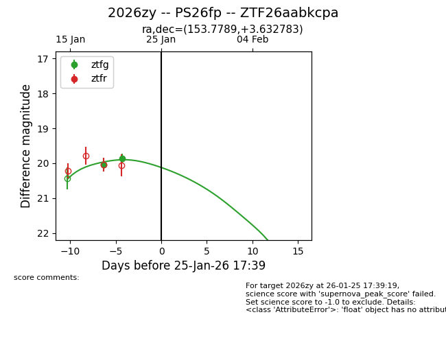
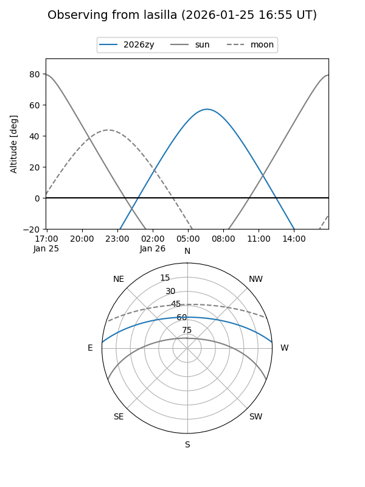
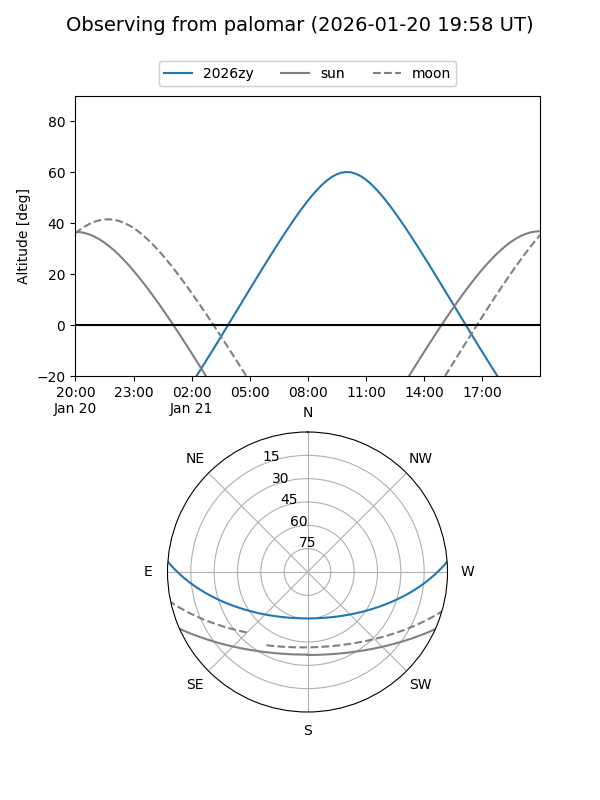
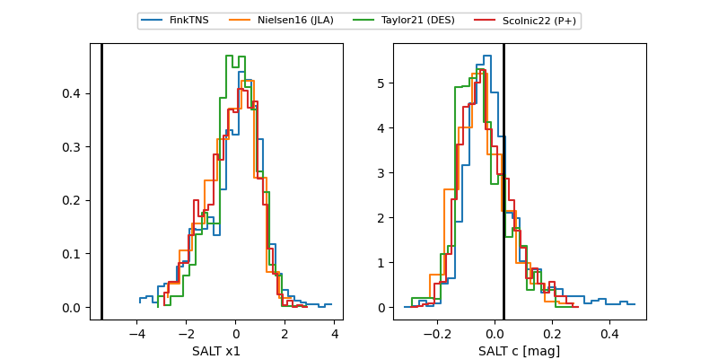

2026zy
Target 2026zy at 2026-01-19 17:06
Aliases and brokers:
FINK: link
Lasair: link
ALeRCE: link
TNS: link
YSE: link
alt names
ZTF26aabkcpa (ztf,fink_ztf)
2026zy (tns,yse)
PS26fp (panstarrs)
Coordinates:
equatorial (ra, dec) = 153.7789,+3.63278
equatorial (HMS+DMS) = 10:15:06.93,+03:37:58.02
galactic (l, b) = (238.1920,+45.91972)
Flags:
Photometry:
last ztfg=20.04
1 ztfg detections
Lightcurve

Visibility


Additional plots
